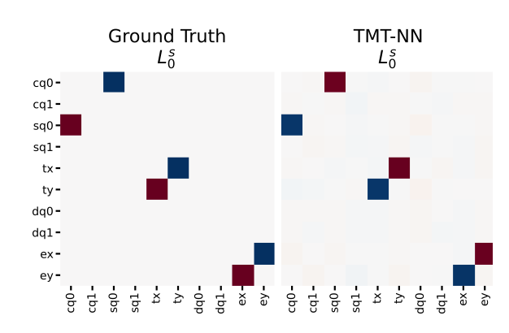
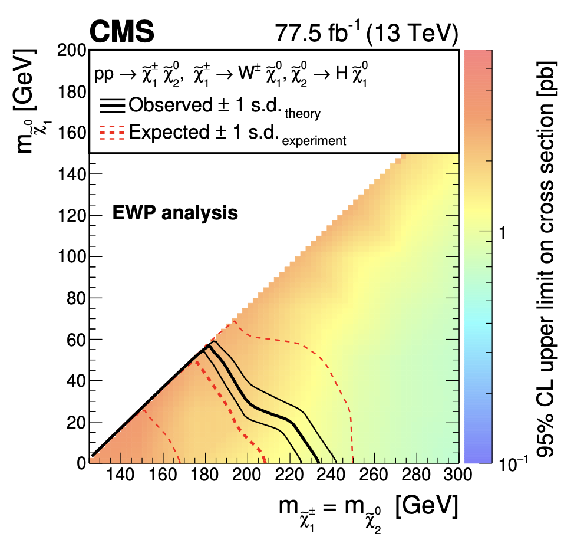
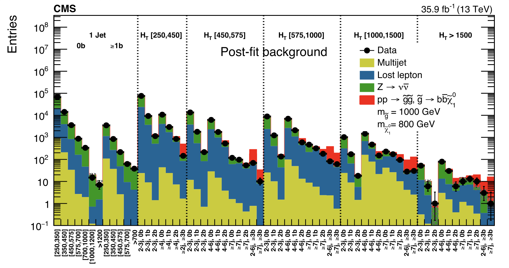
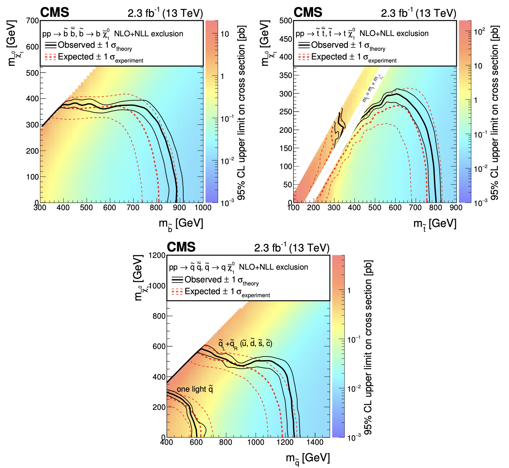
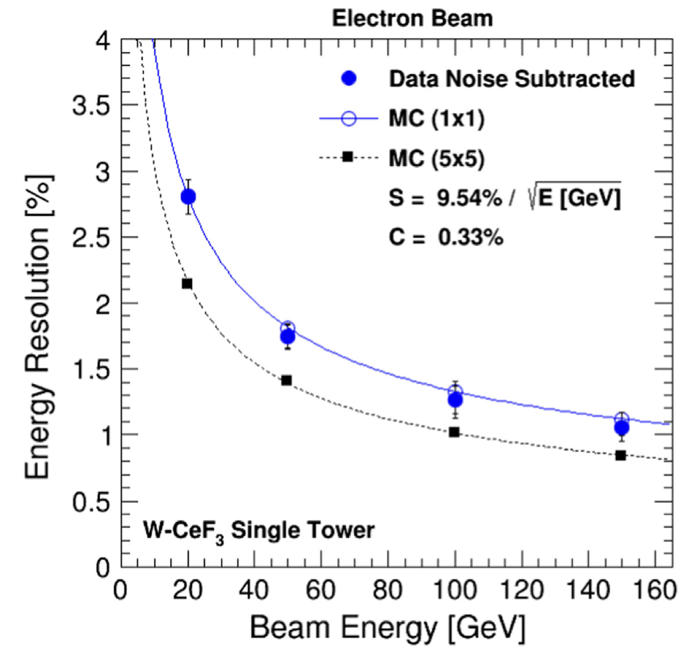
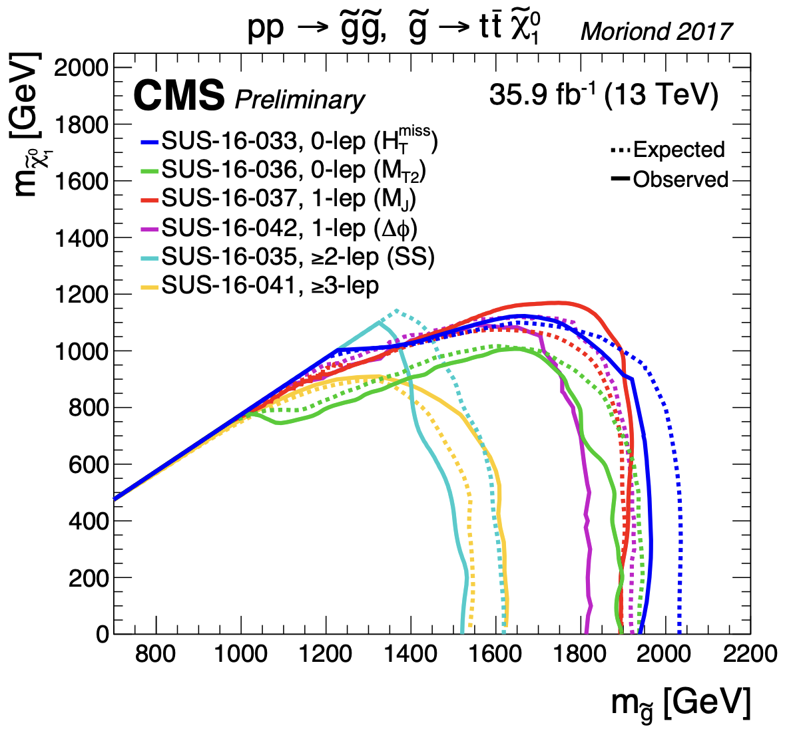

|
Myriam Schönenberger
I completed my Master's at the
Kim Jaechul Graduate School of AI at KAIST in August 2026,
where I worked in the AI & Probabilistic Reasoning (AIPR) Lab
with Kee-Eung Kim.
My thesis develops a framework for discovering control symmetries directly from transition data,
by identifying group actions whose orbits remain tangent to the manifold of valid
state–action–next-state transitions, and was published at
CoRL 2026.
More broadly, I'm interested in physics-informed priors — symmetries, conservation laws, and the
geometry of dynamics — and how building them into reinforcement learning and world models can make
agents more sample-efficient, robust, and safe to deploy in the real world.
Before AI, I was a particle physicist at the
Institute for Particle Physics and Astrophysics (IPA) at ETH Zürich,
advised by Rainer Wallny.
I searched for supersymmetry in the fully hadronic and Higgs-to-diphoton final states with the CMS experiment at the LHC, summarized in my
PhD thesis.
CV /
Scholar /
Github
|
|
Publications
Listed below are publications where I contributed significantly.
|
|

|
Discovering Control Symmetries via Transition Manifold Tangency
Myriam Schönenberger, Kee-Eung Kim
Conference on Robot Learning (CoRL),
2026
OpenReview /
Code
Infers joint state and action symmetry transformations from logged robot transitions by
requiring their infinitesimal motion to stay tangent to the transition manifold, without
assuming the behavior policy's data is symmetric.
|
|

|
Search for supersymmetry using Higgs boson to diphoton decays at √s = 13 TeV
CMS Collaboration
CMS,
JHEP,
11,
2019,
109
10.1007/JHEP11(2019)109
1908.08500
|
|

|
Search for new phenomena with the MT2 variable in the all-hadronic final state produced in proton–proton collisions at √s = 13 TeV
CMS Collaboration
CMS,
Eur. Phys. J.,
C77,
2017,
10,
710
10.1140/epjc/s10052-017-5267-x
1705.04650
|
|

|
Search for new physics with the MT2 variable in all-jets final states produced in pp collisions at √s = 13 TeV
CMS Collaboration
CMS,
JHEP,
10,
2016,
006
10.1007/JHEP10(2016)006
1603.04053
|
|

|
Test beam results with a sampling calorimeter of cerium fluoride scintillating crystals and tungsten absorber plates for calorimetry at the HL-LHC
R. Becker and others
Nucl. Instrum. Meth.,
A824,
2016,
681-683
10.1016/j.nima.2015.09.052
|
|

|
Searches for strong production of supersymmetry in the fully hadronic final states at CMS
Schoenenberger, Myriam
PoS,
EPS-HEP2017,
2017,
336
10.22323/1.314.0336
|
|